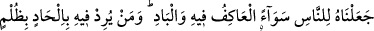

nûrunu artırır ve mü’minin kalbi onunla nurlanır.
Mûsâ (a.s.) bir defasında: “Ya Rabbi! Kullarının en âcizi kimdir?” dedi. Allah Teâlâ:
“Amelsiz cennet, duâsız rızık isteyen kimsedir.” buyurdu. “Kullarının en cimrisi
kimdir?” dedi. Allah Teâlâ: “Bir ihtiyaç sâhibi kendisinden bir şey isteyip de onu
doyurmaya gücü yettiği halde doyurmayan kimsedir.” buyurdu.
Yesrib şehrinde bir adam vardı. Kavminin ileri gelen dostlarını topladı. Kölesine dört
dirhem vererek bununla gelenler için bir miktar meyve satın almasını emretti. Köle,
çarşıya giderken Mansur b. Ammar’ın mescidine uğradı. Gördü ki Mansur, bir fakir için
bir şeyler istiyor ve “Kim bu yoksula dört dirhem verirse, ona dört duâda bulunacağım.”
diyordu. Köle de elindeki dirhemleri fakire verdi. Mansûr: “Senin için duâ etmemi
istediğin şeyler neler, söyle bakalım.” dedi. Köle: “Benim bir efendim var, ondan
kurtulmak istiyorum.” dedi. Mansûr, bunun için duâ etti. Köle: “Diğeri, Allah’ın
dirhemlerimi bana geri vermesi.” dedi. Mansûr bunun için de duâ etti. Mansûr: “Başka
nedir?” diye sordu. Köle: “Allah’ın efendimin tevbesini kabul etmesi.” dedi. Mansûr
bunun için de duâ etti. Sonra “Başka nedir?” diye sordu. Köle: “Allah’ın beni, efendimi,
seni ve o topluluğu bağışlaması.” dedi. Mansûr bunun için de duâ etti.
Bundan sonra köle efendisine döndü. Efendisi, “Niçin geciktin?” diye sordu. Köle de
olanları anlattı. Efendisi: “Ne duâda bulundu?” dedi. Köle: “Kendimin âzâdlığını
istedim.” dedi. Efendisi: “Git, artık sen hürsün.” dedi. Sonra “İkinci olarak ne için duâ
etti?” diye sordu. Köle: “Allah’ın dirhemlerimi geri vermesi için.” dedi. Efendisi: “Al
sana dört bin dirhem.” dedi. Sonra “Üçüncü olarak ne için duâ etti?” diye sordu. Köle:
“Allah’ın senin tevbeni kabul etmesi için.” dedi. Efendisi: “O halde ben de Allah’a
tevbe ettim.” dedi. Sonra “Dördüncü olarak ne için duâ etti?” diye sordu. Köle:
“Allah’ın beni, seni, Mansûr’u ve bu topluluğu bağışlaması için.” dedi. Efendisi: “İşte
bu benim elimde değil.” dedi.
Gece olup istirâhata çekilince rüyâsında gördü ki sanki birisi ona şöyle sesleniyordu:
“Sen kendine âid olanı yaptın. Benim bana âid olanı yapmayacağımı mı düşünüyorsun?
Seni, köleyi, Mansur’u ve o mecliste hazır olanları bağışladım.”
Bu hikâyede görüldüğü üzere bir çok dersler vardır. Biz de Allah’tan mağfiret ve
güzel âkıbet niyaz ederiz.
Sen, Ayaz gibi aşk sultanının kapısına hizmetçi ol
Çünkü âşıkların işinin sonu övgüye değerdir